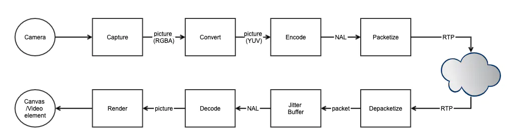

Video Pipeline¶
Abstract |
Video Pipeline |
Authors |
Walter Fan |
Status |
WIP |
Updated |
2022-09-16 |
概述¶
视频流水线是指视频从发送端摄像头捕捉视频图像，将视频流进行转换，编码，打包，发送，直到接收端进行解包，缓存，解码再到将视频图像渲染到画布上或者视频元素中
#show test video
gst-launch-1.0 -vvv videotestsrc ! 'video/x-raw,width=1280,height=720,format=RGB,framerate=60/1' ! fpsdisplaysink
#play audio of mp4
gst-launch-1.0 filesrc location=`pwd`/obama_talk.mp4 \
! qtdemux name=demux demux.audio_0 \
! decodebin ! audioconvert ! audioresample ! autoaudiosink
#play video of mp4
gst-launch-1.0 filesrc location=`pwd`/obama_talk.mp4 \
! qtdemux name=demux demux.video_0 \
! decodebin ! videoconvert ! videoscale ! autovideosink
Video pipeline by gstreamer¶
# linux send h264 rtp stream:
gst-launch-1.0 -v ximagesrc \
! video/x-raw,framerate=20/1 \
! videoscale ! videoconvert \
! x264enc tune=zerolatency bitrate=500 speed-preset=superfast \
! rtph264pay \
! udpsink host=127.0.0.1 port=5000
# Macos send h264 rtp stream:
gst-launch-1.0 -v avfvideosrc capture-screen=true \
! video/x-raw,framerate=20/1 \
! videoscale ! videoconvert \
! x264enc tune=zerolatency bitrate=500 speed-preset=superfast \
! rtph264pay \
! udpsink host=127.0.0.1 port=5000
# receive h264 rtp stream:
gst-launch-1.0 -v udpsrc port=5000 caps = "application/x-rtp, media=(string)video, clock-rate=(int)90000, encoding-name=(string)H264, payload=(int)96" \
! rtph264depay \
! decodebin \
! videoconvert \
! autovideosink
大体步骤如下
capture 捕捉媒体流
getUserMedia getDisplayMedia
convert 格式转换
RGB –> YUV
Encode 编码
H.264 Encode
Packetize 打包
H264 NAL pack into RTP packet
Transmit 传输
Transmit RTP packets from sender to receiver
Depacketize 解包
Depacketize RTP packets to H264 NAL
Jitter Buffer 缓存
Cache H264 NAL if there is no frame can be decoded
Decode 解码
Decode H264 NAL to VAL to image
Render 渲染或回放
Render the image to Canvas, playback the images as video